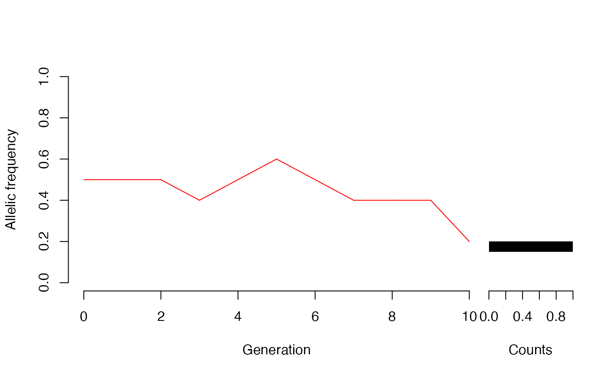
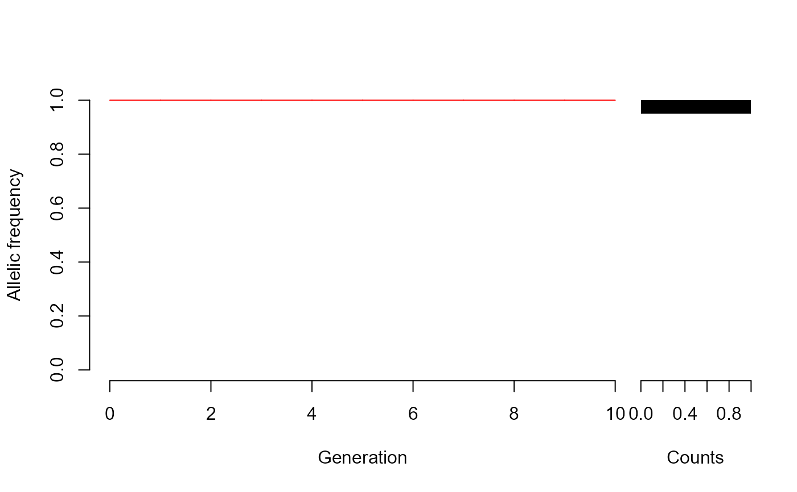
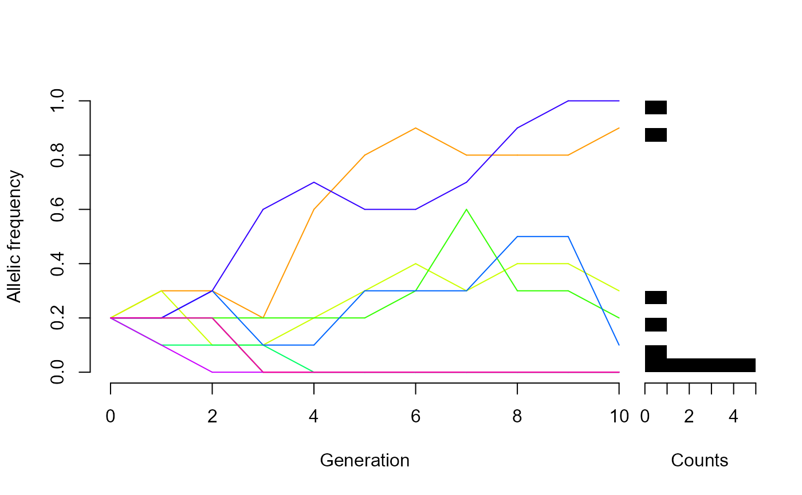
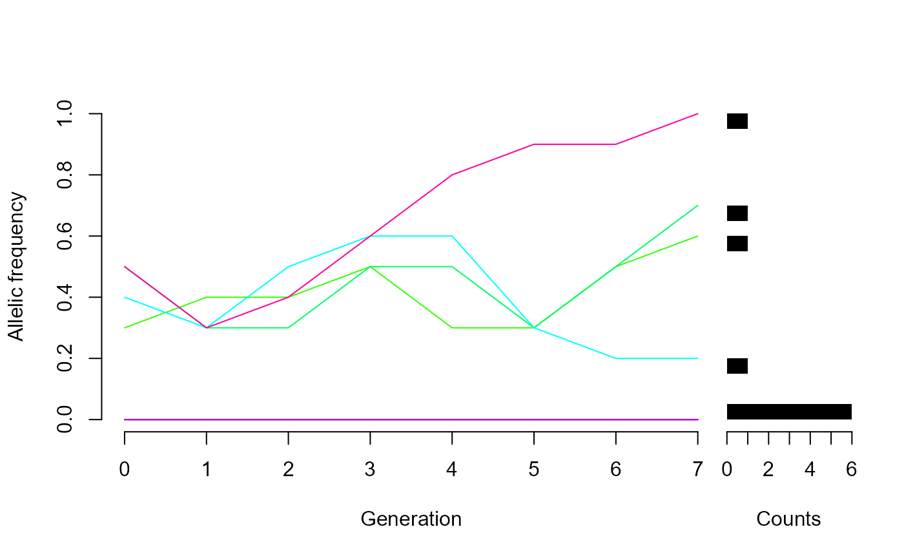

R/WFDriftSim.R
WFDriftSim.RdWFDriftSim simulates genetic drift of diploid Wright–Fisher
populations with a given effective population size through a certain number of
generations.
WFDriftSim(
Ne,
n.gen,
p0 = 0.5,
n.sim = 1,
plot.type = "animate",
print.data = FALSE,
knitr = FALSE
)Number giving the effective population size of the population
Number of generations to be simulated.
Initial frequency of a given allele. As the simulated organism is
diploid, the other alleles frequency will be 1-(p0). Default value
is 0.5.
Number of simulations to be made. If decimals are inserted,
they will be rounded. Default value is 1.
Character indicating if simulations should be plotted as colored
lines. Each color represents a different population. If
plot.type = "animate" (default value) it animates each generation
individually. If plot.type = "static" it plots all lines rapidly. If
plot.type = "none" nothing is plotted.
Logical indicating whether all simulation results should be
returned as a data.frame. Default value is FALSE.
Logical indicating if plot is intended to show up in RMarkdown files made by the Knitr R package.
If plot.type = "static" or "animate", plots the
timeseries of all simulations, with each line+color referring to a
different simulation. Note that if many simulations (generally more
than 20) are simulated, colors might be cycled and different simulation
will have the same color. If print.data = TRUE, returns a
data.frame with the simulation results.
The effective population size (Ne) is strongly connected
with the rate of genetic drift (for details, see Waples, 2022).
Fisher RA (1922) On the dominance ratio. Proc. R. Soc. Edinb 42:321–341
Kimura M (1955) Solution of a process of random genetic drift with a continuous model. PNAS–USA 41(3):144–150
Tran, T. D., Hofrichter, J., & Jost, J. (2013). An introduction to the mathematical structure of the Wright–Fisher model of population genetics. Theory in Biosciences, 132(2), 73-82. [good for the historical review, math can be challenging]
Waples, R. S. (2022). What is Ne, anyway?. Journal of Heredity.
Wright S (1931) Evolution in Mendelian populations. Genetics 16:97–159
# \donttest{
#Default values:
WFDriftSim(Ne = 5, n.gen = 10, knitr = TRUE)

#A population which has already fixed one of the alleles:
WFDriftSim(Ne = 5, n.gen = 10, p0=1, knitr = TRUE)

#Many populations::
WFDriftSim(Ne = 5, n.gen = 10, p0=0.2, n.sim=10, knitr = TRUE)

######## continuing a previous simulation:
n.gen_1stsim <- 10 # number of gens in the 1st sim:
sim1 <- WFDriftSim(Ne = 5, n.gen = n.gen_1stsim, p0=.2, n.sim=10,
plot.type = "none", print.data = TRUE, knitr = TRUE)
n.gen_2ndsim <-7 # number of gens in the 2nd sim:
# now, note how we assigned p0:
sim2 <- WFDriftSim(Ne = 5, n.gen = n.gen_2ndsim, p0=sim1[,ncol(sim1)],
plot.type = "static", n.sim=10, print.data = TRUE, knitr = TRUE)

# if we want to merge both simulations, then we have to:
# remove first column of 2nd sim (because it repeats
# the last column of the 1st sim)
sim2 <- sim2[,-1]
# re-name 2nd sim columns:
colnames(sim2) <- paste0("gen", (n.gen_1stsim+1):(n.gen_1stsim+n.gen_2ndsim))
#finally, merging both rounds of simulations:
all_sims <- cbind(sim1, sim2)
head(all_sims)
#> gen0 gen1 gen2 gen3 gen4 gen5 gen6 gen7 gen8 gen9 gen10 gen11 gen12 gen13
#> sim1 0.2 0.4 0.3 0.4 0.2 0.2 0.4 0.4 0.2 0.1 0.3 0.4 0.5 0.5
#> sim2 0.2 0.2 0.2 0.3 0.3 0.5 0.4 0.6 0.5 0.2 0.2 0.2 0.2 0.1
#> sim3 0.2 0.2 0.2 0.1 0.1 0.1 0.1 0.0 0.0 0.0 0.0 0.0 0.0 0.0
#> sim4 0.2 0.2 0.3 0.3 0.1 0.1 0.1 0.1 0.1 0.1 0.1 0.1 0.2 0.1
#> sim5 0.2 0.0 0.0 0.0 0.0 0.0 0.0 0.0 0.0 0.0 0.0 0.0 0.0 0.0
#> sim6 0.2 0.1 0.0 0.0 0.0 0.0 0.0 0.0 0.0 0.0 0.0 0.0 0.0 0.0
#> gen14 gen15 gen16 gen17
#> sim1 0.6 0.5 0.5 0.4
#> sim2 0.1 0.1 0.1 0.0
#> sim3 0.0 0.0 0.0 0.0
#> sim4 0.1 0.1 0.1 0.1
#> sim5 0.0 0.0 0.0 0.0
#> sim6 0.0 0.0 0.0 0.0
# }